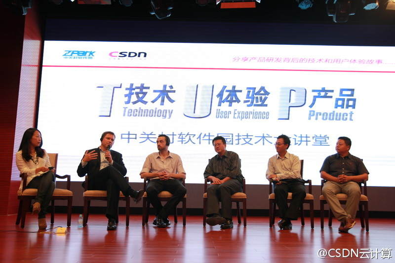

回复@何大少V:Marten认为是人少，资源不多，芬兰人有意识从智慧和创新中获取财富，而且，虽然是小国，但他们的视野是全球性的。 //@何大少V:Linux,MySQL..芬兰点解可以甘劲...@CSDN云计算:【解读芬兰开源成功密码】从Linux到MySQL，只有几百万人口的北欧小国芬兰创造了开源界的两大传奇。Eucalyptus CEO Marten Mickos表示，芬兰还没有北京大，芬兰语非常复杂，像编程一样；芬兰人很害羞，芬兰天气寒冷。什么才是真正的原因？CSDN将会就芬兰的开源成功与Marten Mickos深入探讨#TUP Masters# 